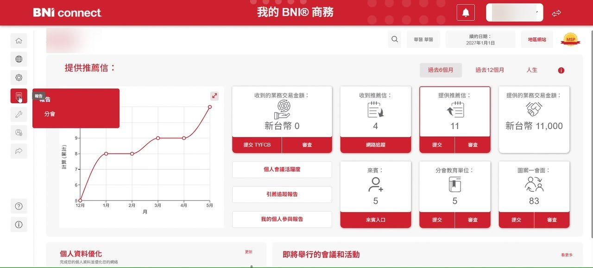
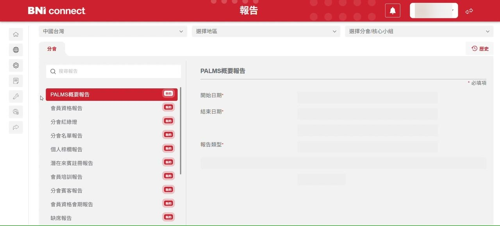
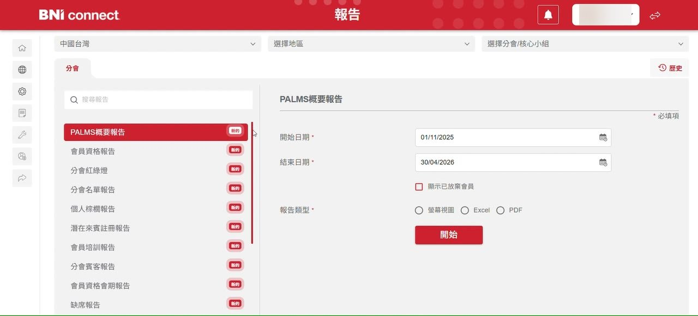
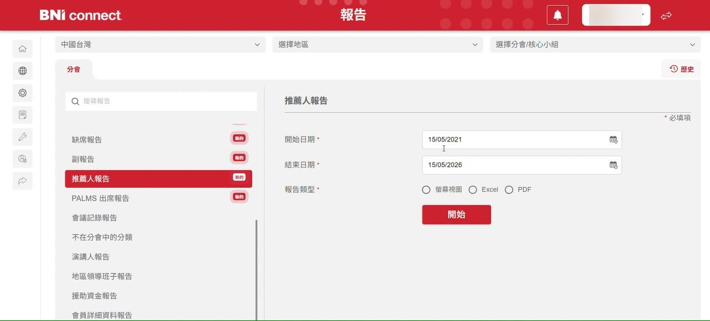
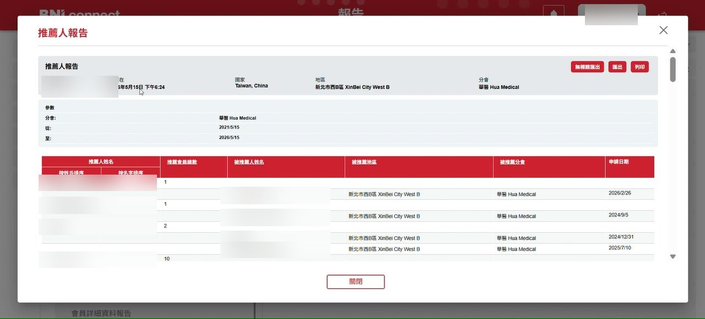

1
從首頁打開左側「報告」選單
登入後預設停在「我的 BNI® 商務」儀表板。把滑鼠移到左側功能列第 4 個圖示，會浮出小選單，選 報告。

2
進入「報告」頁,預設停在 PALMS 概要報告
頁面載入後,左側清單會自動選中第一項「PALMS概要報告」。先別急著按開始,我們要的是清單裡更下面的推薦人報告。

3
清單往下滑,點選「推薦人報告」
在左側清單往下捲,在「副報告」下面找到 推薦人報告 並點選。被選中的項目會變成紅底白字。

小提示清單上方有搜尋框,直接輸入「推薦」也能快速過濾。
4
設定查詢區間與報告類型
右側會顯示三個必填欄位:開始日期、結束日期、報告類型。範例設成 2021/05/15 到 2026/05/15(五年區間),報告類型選 螢幕視圖(直接在頁面上看,不用下載)。確認後按紅色「開始」。

小提示日期格式是 DD/MM/YYYY(日/月/年),不是台灣常用的 YYYY/MM/DD,別填錯。
5
等待 BNI 動畫跑完
按下開始後會跳出 modal 視窗,中間是 BNI logo 載入動畫。資料量大的分會、長區間查詢會跑久一點(通常 5–15 秒)。
6
結果頁:推薦人 × 被推薦人 × 申請日期
表格欄位包含:推薦人姓名、會員推薦總數、被推薦人姓名、被推薦地區、被推薦分會、申請日期。同一位推薦人若有多筆推薦,會員推薦總數欄會合併顯示總數。右上角「匯出」可另存 Excel,「無模題匯出」是無表頭版本。看完按下方「關閉」回到查詢頁。

小提示表頭的「按姓氏排序」「按名字排序」可切換排序;欄位名(底線)點下去可換排序鍵。